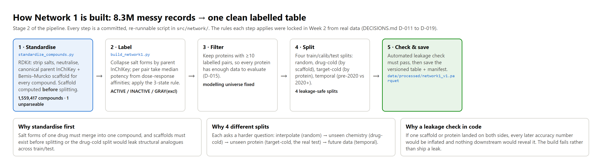
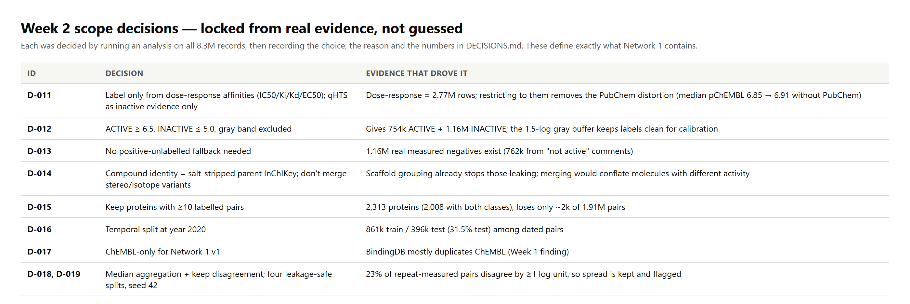
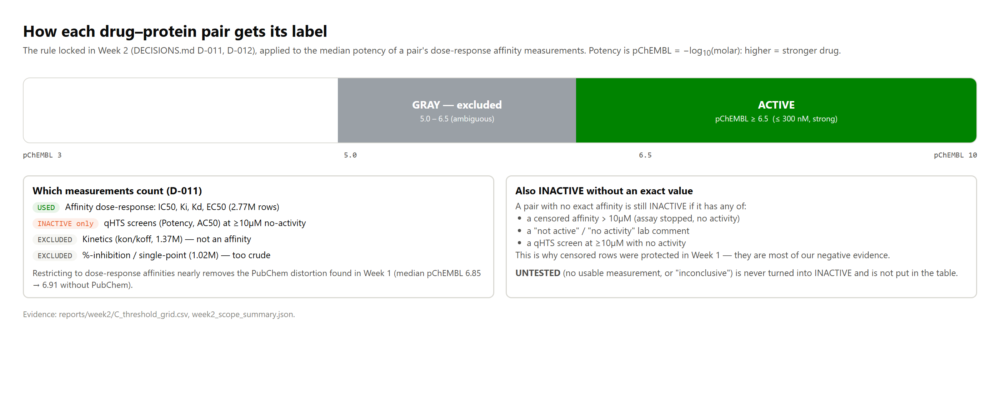
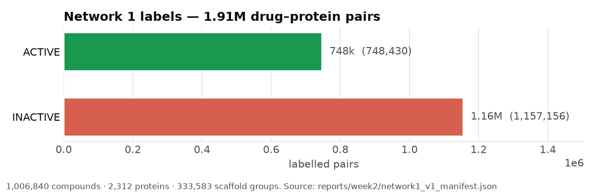
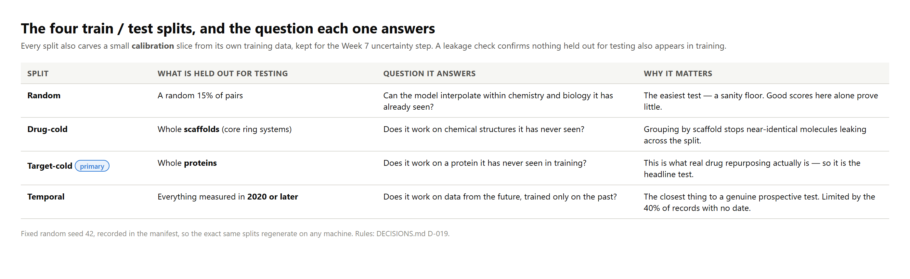
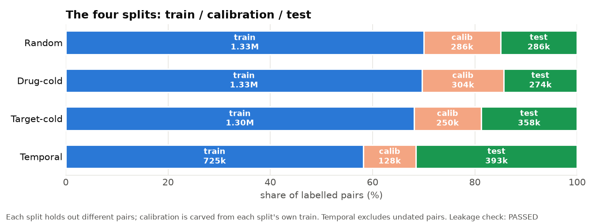

DoneLocked the Week 2 scope rules from real data (9 decisions), then built Network 1: the clean, labelled, leakage-checked drug–protein table with four train/test splits.
Key result748k active and 1.16M inactive pairs (1.91M total) over 2,312 proteins and 1.01M compounds; all four splits pass the automated leakage check.
NextStage 3 — embed compounds (ChemBERTa) and proteins (ESM-2) on a Kaggle GPU, cache the vectors, and build classical baselines.
1Where we are in the plan
Stage 1 (Data) finished in the previous reporting period. This week completed project Week 2 (lock the dataset rules) and project Week 3 (build Network 1) — Stages 1 and 2 of the pipeline are now done. The model itself (Stages 3–4) is next and needs a GPU, which is why it is scheduled on Kaggle.

Figure 1. The five steps that turn 8.3M raw measurements into one clean labelled table. Each is a committed script in src/network/.
2Locking the scope from evidence (project Week 2)
Before building anything, we had to decide what the data actually means: which measurements to trust, where the line between "active" and "inactive" sits, and how to split the data fairly. We made each decision by running an analysis on all 8.3M records, then recording the choice and the numbers behind it. The analysis script is src/ingest/analyze_scope_week2.py; the decisions are DECISIONS.md D-011 to D-019.

Figure 2. The nine scope decisions and the evidence that drove each one.
The single most useful finding: restricting labelling to dose-response affinity measurements (IC50/Ki/Kd/EC50) nearly removes the PubChem screening distortion found in Week 1 — the median potency barely moves when PubChem is excluded (6.85 → 6.91), so we did not need complicated per-family corrections. We also confirmed we have abundant real negatives (1.16M measured-inactive pairs), so the positive-unlabelled fallback is not needed.
3How each pair gets its label

Figure 3. The labelling rule, applied to the median potency of each pair's dose-response measurements. The ambiguous 5.0–6.5 band is excluded to keep labels clean; "untested" is never turned into "inactive".
4What Network 1 contains

Figure 4. The finished table: labelled drug–protein pairs, with compound, protein and scaffold counts.
Column
What it holds
pik, accession
The compound (salt-stripped parent InChIKey) and protein (UniProt) — the pair's identity
label
ACTIVE or INACTIVE
median_p, iqr, high_disagreement
Aggregated potency, its spread, and a flag where repeats disagree by ≥1 log unit
scaffold, scaffold_group
The compound's core ring system, used for the drug-cold split
year
Earliest measurement year, used for the temporal split
split_random / drugcold / targetcold / temporal
train / calib / test assignment for each of the four splits
provenance
"measured" — so predicted edges (added later) can never be confused with measured ones
5The four splits and the leakage check

Figure 5. Each split holds out something different and answers a harder question than the last.

Figure 6. How the labelled pairs divide into train / calibration / test for each split. The build fails unless the leakage check passes.
The leakage check is code that fails the build if any scaffold appears in both the drug-cold train and test sets, or any protein in both the target-cold sets, or if the temporal calibration data leaks past the 2020 cutoff. For this build it passed.
6Roadblocks this week
No local GPU (confirmed): Stage 3 embeddings (1.56M compounds, ~5,700 proteins) can't run on the laptop, so they are scheduled on a Kaggle GPU. Not a blocker for Network 1.
Memory limits: the first Network 1 build was silently killed by the OS — holding all 8.3M rows with their free-text comment column plus Python set operations exceeded 16 GB RAM. Fixed by dropping the text column early, using category types, and replacing Python sets with vectorised pandas joins. Build memory dropped from 2.3 GB (killed) to 1.6 GB.
Two further build bugs caught and fixed: a read-only-array shuffle, and a non-serialisable missing-value key in the manifest.
Measurement disagreement: 23% of repeat-measured pairs disagree by ≥1 log unit, so we aggregate by median and flag high-disagreement pairs rather than trusting any single value.
7Next week (Stage 3)
Embed every Network 1 compound with ChemBERTa and every protein with ESM-2 (frozen, on Kaggle GPU); cache the vectors keyed by identifier.
Handle the giant proteins (longest is 34,350 residues vs ESM-2's ~1,024 limit) by truncation.
Build classical fingerprint baselines (logistic regression, XGBoost) — the floor the Stage 4 model must beat.
Sanity-check that similar compounds and same-family proteins cluster in the vector space.
Supporting files: W4_01–W4_06 (figures), references.md, WEEK04_FORM_ENTRIES.md. All figures regenerate from committed data. Reproduce the table: python -m src.network.standardize_compounds then python -m src.network.build_network1.